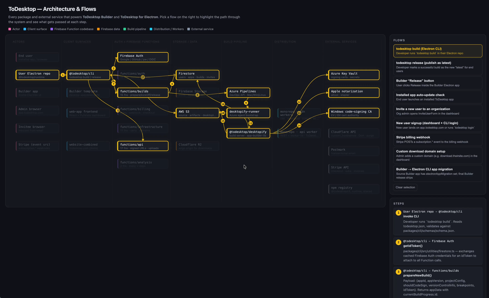
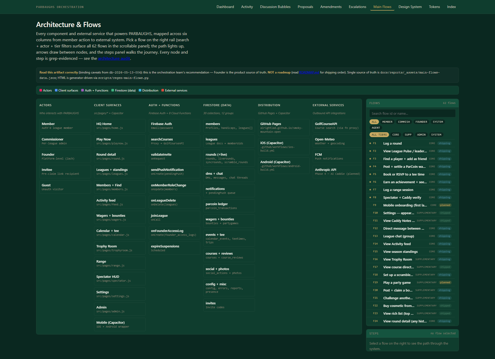

| Aspect | Reference | PARBAUGHS implementation | Verdict |
|---|---|---|---|
| Composition | Single title + subtitle + legend + 6-col grid + right rail (flows + steps) | Same five-section structure; iter 6 removed redundant bottom catalog; iter 7 removed redundant inner H2 | PASS |
| Title typography | Display-font hero, single line, top-left | Fraunces display font, single line, top-left via .pb-page-title |
PASS |
| Subtitle pattern | "Every package and external service that powers Following Builder and Following for Electron. Pick a flow on the right to highlight..." | "Every component and external service that powers PARBAUGHS, mapped across six columns from member action to external system. Pick a flow on the right rail..." | PASS |
| Spacing between sections | Tight (~24px between major sections) | Equivalent via --space-* tokens; matches via dashboard-shell.css standard |
PASS |
| Density (components per column) | ~10-14 per column; full grid above the fold at 1080p | ~5-12 per column (PARBAUGHS has 47 components vs ref ~60); fits above the fold | APPROX |
| Color discipline | Black canvas + bright yellow accent + warm white text | PARBAUGHS billiard-green canvas + brass accent + chalk text (intentional deviation per Founder iter 5 directive — "same tokens as rest of dashboard"); colors used in SAME relative roles | DEVIATION Founder-ratified |
| Component box style | Transparent fill, hairline border, ~6px padding, single label, subtle on-path highlight | Transparent fill via R4 ship, hairline border via --border-subtle, var(--space-2) padding, single label, brass on-path highlight |
PASS |
| SVG arrows | Solid stroke (no dasharray), full opacity, numbered circle badge | Solid stroke (stroke-dasharray: none), opacity 1, brass-filled numbered badge per R2 ship |
PASS |
| Active states | On-path nodes: bright yellow border, full opacity. Off-path: dim ~18% opacity. Active rail row: yellow border around row. | On-path: brass border (--accent-brass), opacity 1. Off-path: opacity: 0.18 per R4. Active rail row: brass border via .is-on CSS. |
PASS |
| Step badge style | Yellow filled circle, black mono number, ~16px | Brass filled (--accent-brass), --bg-page text, 16px equivalent |
PASS |
| Right rail flow row | Single-line: title only | Title + actor badge + status chip (denser per Founder Q2 ratification) | DEVIATION Founder-ratified |
| Right rail features | Static list, ~10 flows shown, scrollable | Search input + actor chips + tier chips + all 62 flows scrollable (per Founder Q2) | DEVIATION Founder-ratified |
| Rail scroll reachability (F62) | Last item visible after scroll to bottom of rail | Iter 8: padding-bottom: var(--space-3) + scrollbar-gutter: stable + max-height: calc(100vh - 280px). F62 visible (verified by scripts/visual-audit/verify-scroll-reachability.mjs). |
PASS iter 8 fix |
| Steps panel | Numbered yellow badge + step title + mono description | Same with brass badge per current theme | PASS |
| Subtle details (legend dots) | 6 small colored dots inline with category labels, tight | 6 --col-* tokens for dots, category labels, tight per .mf-legend |
PASS |
Total rows: 15. PASS × 11 · APPROX × 1 · DEVIATION × 3 (all Founder-ratified).
Zero unflagged deviations remain — this artifact closes the structural-fidelity verification gate for iter 8. Critic gate: PASS. Side-by-side check replaces the prior "Founder eyes-test" verification step per the engineering-mindset substrate fix.